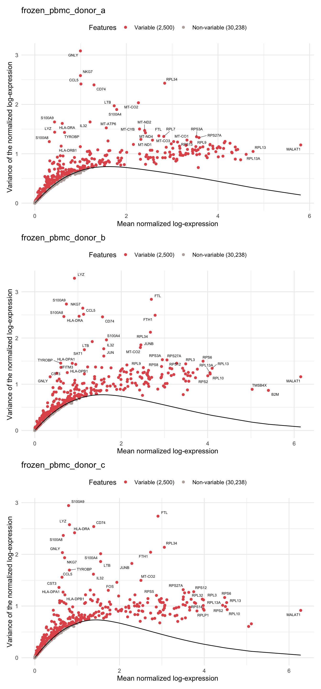
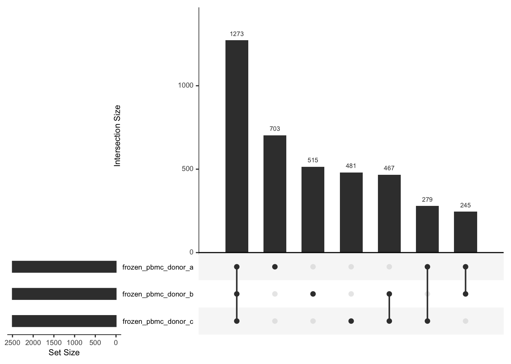

Single Cell Gene Expression
Feature selection
Overview
This report contains results from the feature selection step of the Single Cell Gene Expression workflow.
“Feature selection identifies genes with the strongest biological signal relative to the technical noise. By restricting downstream analysis to the most informative genes, the effect of dimensionality is diminished, noise is reduced and the analysis is simplified.”
Highly variable genes
Model the variance of the log-expression profiles for each gene, decomposing it into technical and biological components based on a mean-variance trend corresponding to Poisson noise.
Figure 1: Variance of normalized log-expression values for each gene in the dataset, plotted against the mean log-expression. The blue line represents represents the mean-variance relationship corresponding to Poisson noise.


Summary
Output
This table describes the output files produced by this document.
| File | Description |
|---|---|
| output/feature-selection.rds | A SingleCellExperiment object. |
Parameters
This table describes parameters used and set in this document.
| Parameter | Value | Description |
|---|---|---|
| n | 2500 | Integer scalar specifying the number of top HVGs to report. |
Version
This output shows the version information about R, the OS and attached or loaded packages.
R version 4.1.1 (2021-08-10)
Platform: x86_64-apple-darwin17.0 (64-bit)
Running under: macOS Big Sur 10.16
Matrix products: default
BLAS: /Library/Frameworks/R.framework/Versions/4.1/Resources/lib/libRblas.0.dylib
LAPACK: /Library/Frameworks/R.framework/Versions/4.1/Resources/lib/libRlapack.dylib
locale:
[1] en_GB.UTF-8/en_GB.UTF-8/en_GB.UTF-8/C/en_GB.UTF-8/en_GB.UTF-8
attached base packages:
[1] parallel stats4 stats graphics grDevices utils datasets
[8] methods base
other attached packages:
[1] scales_1.2.0 ggrepel_0.9.1
[3] ggplot2_3.3.6 scran_1.20.1
[5] scuttle_1.2.1 SingleCellExperiment_1.14.1
[7] SummarizedExperiment_1.22.0 Biobase_2.52.0
[9] GenomicRanges_1.44.0 GenomeInfoDb_1.28.4
[11] IRanges_2.26.0 S4Vectors_0.30.2
[13] BiocGenerics_0.38.0 MatrixGenerics_1.4.3
[15] matrixStats_0.62.0 BiocParallel_1.26.2
[17] BiocSingular_1.8.1 BiocNeighbors_1.10.0
loaded via a namespace (and not attached):
[1] bitops_1.0-7 UpSetR_1.4.0
[3] tools_4.1.1 utf8_1.2.2
[5] R6_2.5.1 irlba_2.3.5
[7] DBI_1.1.2 colorspace_2.0-3
[9] withr_2.5.0 tidyselect_1.1.2
[11] gridExtra_2.3 compiler_4.1.1
[13] cli_3.3.0 DelayedArray_0.18.0
[15] labeling_0.4.2 stringr_1.4.0
[17] digest_0.6.29 rmarkdown_2.14
[19] XVector_0.32.0 pkgconfig_2.0.3
[21] htmltools_0.5.2 sparseMatrixStats_1.4.2
[23] highr_0.9 fastmap_1.1.0
[25] limma_3.48.3 htmlwidgets_1.5.4
[27] rlang_1.0.2 rstudioapi_0.13
[29] DelayedMatrixStats_1.14.3 generics_0.1.2
[31] farver_2.1.0 jsonlite_1.8.0
[33] dplyr_1.0.9 RCurl_1.98-1.6
[35] magrittr_2.0.3 GenomeInfoDbData_1.2.6
[37] patchwork_1.1.1 Matrix_1.4-1
[39] Rcpp_1.0.8.3 munsell_0.5.0
[41] fansi_1.0.3 lifecycle_1.0.1
[43] stringi_1.7.6 yaml_2.3.5
[45] edgeR_3.34.1 zlibbioc_1.38.0
[47] plyr_1.8.7 grid_4.1.1
[49] dqrng_0.3.0 crayon_1.5.1
[51] lattice_0.20-45 beachmat_2.8.1
[53] locfit_1.5-9.5 metapod_1.0.0
[55] knitr_1.39 pillar_1.7.0
[57] igraph_1.3.1 ScaledMatrix_1.0.0
[59] glue_1.6.2 evaluate_0.15
[61] vctrs_0.4.1 gtable_0.3.0
[63] purrr_0.3.4 assertthat_0.2.1
[65] xfun_0.31 rsvd_1.0.5
[67] tibble_3.1.7 cluster_2.1.3
[69] bluster_1.2.1 statmod_1.4.36
[71] ellipsis_0.3.2